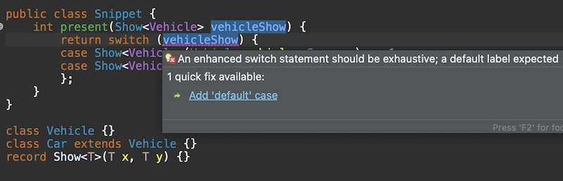
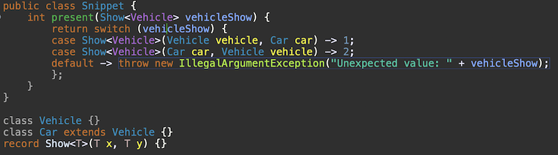
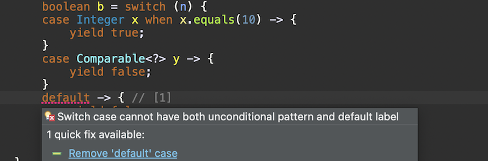
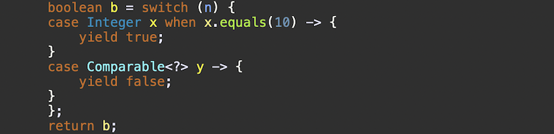
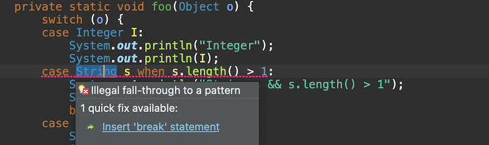
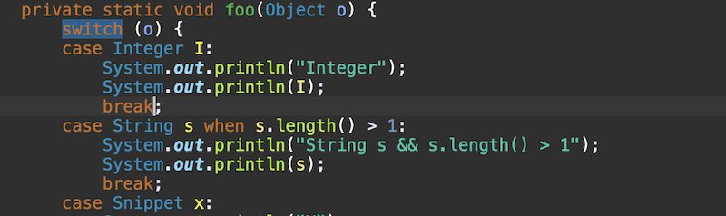
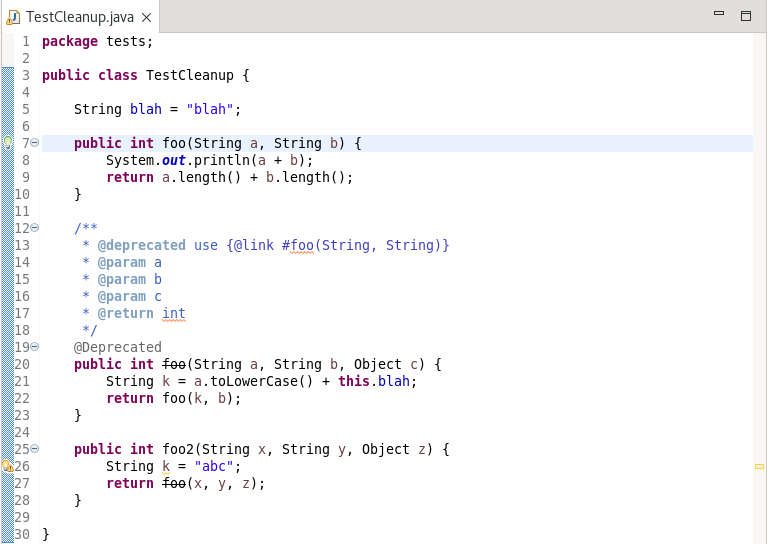
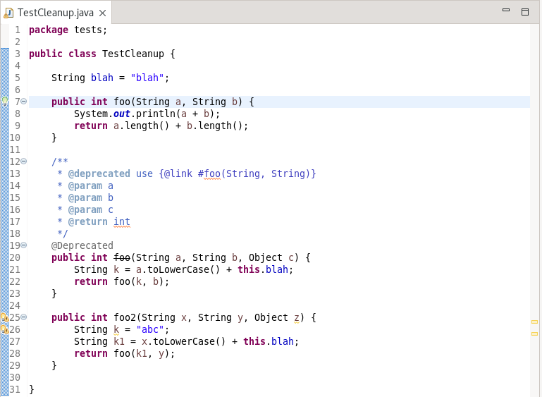
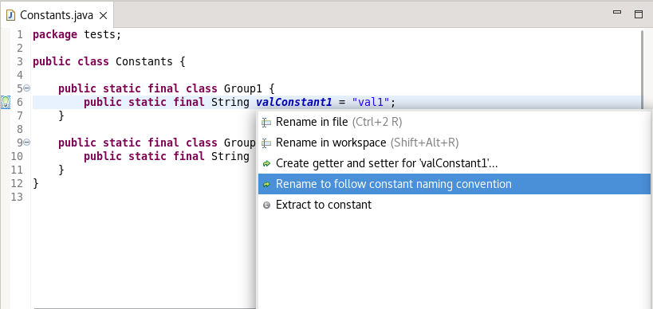

Here are descriptions of some of the more interesting or significant changes made to the Java development tools (JDT) for the 4.30 release of Eclipse. They are grouped into:
See also the Eclipse Platform What's New document for changes in the Platform.
We also recommend to read the Tips and Tricks.
New Java™ Language Features |
|
| Java Language Features |
The release notably includes the following Java features:
|
Java Editor |
|
| Quick Fix to add default case |
You can use the new Quick Fix (Ctrl+1) to add the missing default case to an enhanced switch statement. For example,
 will result in: |
| Quick Fix to remove default case |
You can use the new Quick Fix (Ctrl+1) to remove the default case when it is present with unconditional pattern in a switch. For example,
 will result in: |
| Quick Fix to insert break statement |
You can use the new Quick Fix (Ctrl+1) to insert the break statement when there is an illegal fall-through to a pattern in a switch statement.
For example,
 will result in: |
| Cleanup and quick fix to replace deprecated method calls |
A new cleanup has been added to the Source > Clean Up > Source Fixing tab page to replace deprecated method calls with inlined content. Choosing this option will inline
the implementation of the deprecated method if and only if:
 will result in inlining the deprecated foo() call in foo2: The functionality is also available as a quick fix for an individual call to a deprecated method that is marked with warning or error. One can also select a deprecated method call and initiate as a quick assist (select call and click CTRL + 1). |
| Quick assist to rename constant fields |
A new quick assist has been added to rename static constant fields to follow a standard syntax using upper-case and underscores rather than camel case.
To use: select the constant and click CTRL+1.
For example,
 will offer to rename the constant "valConstant1" to "VAL_CONSTANT1". |
JDT Developers |
|
| Pushdown of refactors and proposals to jdt.manipulations | A significant amount of code was pushed down from org.eclipse.jdt.ui into org.eclipse.jdt.core.manipulations, specifically most of the proposal and refactor operations. This will allow these operations to be used in a headless environment. |